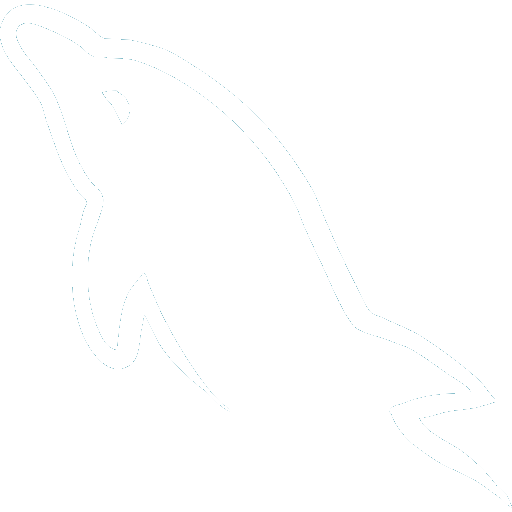
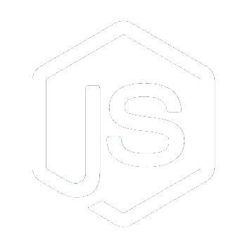

Timeline
"Jatuh 7 kali, Bangkit 8 kali"
Halo, nama saya Syarif Hidayatullah, Saya merupakan seseorang yang tertarik dengan kemajuan teknologi, karena kemajuan teknologi perkerjaan manusia menjadi lebih mudah. Saya berharap dapat berkontribusi dan menciptakan dampak positif melalui karya-karya saya. Terima kasih telah mengunjungi personal website saya!
-
Juni 2014 - Agustus 2017
Teknik Informatika - Politeknik Negeri Cilacap
Cilacap, Jawa TengahMembuatkan Sistem Monitoring Persediaan Darah yang berstudi kasus pada PMI Cilacap untuk kebutuhan Tugas Akhir Politeknik Negeri Cilacap tahun 2017, Menggunakan PHP Native dan Bootsraps.
Detail -
November 2017 - Juni 2018
Web Developer - CV. Creative Gama Studio
YogyakartaMembuat Sistem Informasi skala kecil seperti Sistem Informasi Kos, Web Profile, dan lain-lain menggunakan PHP Native dan Bootsraps.
Detail -
Agustus 2018 - Februari 2019
Web Developer - PT. Cipta Kreasi
Depok, Jawa BaratMengembangkan Sistem Tracking Project yg bertujuan memanagement proses tracking dan keuangan project sampai ke tahap Buku Besar, menggunakan CodeIgniter 3 dan Bootsraps.
Detail -
Maret 2019 - September 2021
Web Developer - PT. Tri Nindya Utama
Jakarta Barat, JakartaMengembangkan Sistem Informasi Audit untuk internal KEMHUB dan KEMHAN, menggunakan PHP framework perusahaan dan Bootsraps.
Detail -
Juli 2022 - Januari 2023
Web Developer - PT. Wiratek Solusi Asia
Purwokerto, Jawa TengahMengembangkan Sistem Psikotes dari PBTAXAND dengan metode DISC, menggunakan CodeIgniter 3 dan Bootsraps.
Detail -
Februari 2023 - Sekarang
Keahlian
-
HTML
-
CSS
-
PHP
-
MySql
-
JavaScript
-
JQuery
-
GitHub
-
CodeIgniter
-
Laravel
-
Rest API
-
Node JS